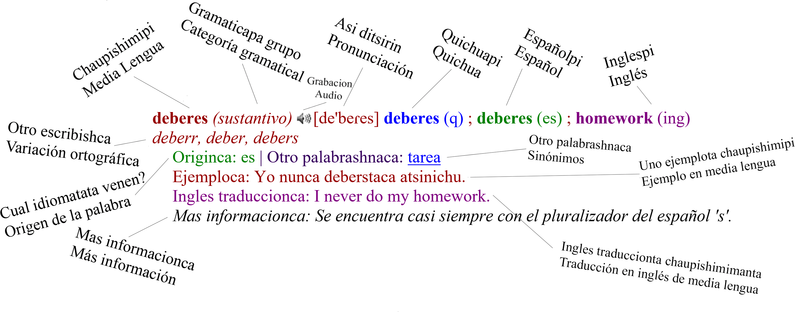

Chaupishimipa Diccionarioca
Nuestro diccionario escrituraca tradicionaltami tenen; no quichua unificado veninchu, español venin yaque ese escribishcata mas mejor entenderin genticunapa Pijal. Asillata, nuestro hablayta no quichuata ni españolta no canchu, poreso nuestro propio escrituratami tenenchi. Nosotropash arshto maneracunatami escribingapa teninche (como otro idiomacunata mundopi); entoncesca diccionariopimi algunos variacioncunata presentanchi. Aquipica, nosotrosca uno descripciontallami variacionhuan presentanata querenchi, asillata ese diccionarioca guiashnami can; no reglashna canchu. Asimi ditsinchi (pronunciacionca)Plataca investigacionpa: SSHRC IDG: 430-2018-00032; SSHRC Explore: 420575
Principal investigadorca: Jesse Stewart, Universidad de Saskatchewan
Comunidadca: Pijal
Principal idiomaca: Chaupishimimi
Traduccioncunahuan: Quichuapipash, españolpipash, inglespipash
Coleccionpa fechacunaca: 2010ta 2020man
Actual numero palabracuna: 3204
Actual versionca: 1.0 - 21/02/2020
Hablantecunaca Pijal: Lucia Gonza Inlago, Mercedes Tabango, Antonio Maldonado, Isabel Bonilla, Luz Maria Gualacata, Elvia Gualacata, Dolores Lechon Bonilla, Zoila Marina falta apellido, Feliciano Inuca, Maricela Pante, Isabel Quilumba, Rosa Tocagon, Luis Bonilla, Jose Manuel Antamba Lechon†, Oswaldo Tocagon, Bolivia Chicaiza, Anita Cañarejo, Carmen Cañarejo†, Homero Gonza, Rodrigo Gonza, Maria Cristina Maldonado, Mirya Gonza, Carmen Quilumbaqui, Rosa Maria Chicaiza, Josefa Gonza, Josefa Tabango, Maria Tabango, Segundo Catucuago, Jose Maria Cabascango, Jose Antonio Caluqui, Maria Fonte, Maria Calapaque, Dolores Sanchez
Diccionario Editadorcunaca: Jesse Stewart, Lucia Gonza Inlago, Gabriela Prado AyalaPalabracunaca escribishca (transcribishca): Lucia Gonza, Mercedes Tabango, Jesse StewartPalabracunaca recogeshca: Jesse Stewart, Gabriela Prado Ayala, Lucia Gonza Inlago, Mercedes Tabango, Steeven Inuca Gonza, Marylin Tocagon TabangoGrabacioncunaca azishca: Jesse Stewart, Gabriela Prado Anayla, Steeven Inuca Gonza, Marylin Tocagon Tabango, Olga Kriukova, Kristy Reyes Herrera, Taliza Chavez Cordova, Adrián Marín EstradaGrabacioncunaca cortashca: Jesse Stewart, Olga KriukovaTraduccioncunaca chaupishimi quichuaman: Lucia Gonza Inlago, Mercedes Tabango, Isabel Bonilla, Antonio Maldonado, Carmen Quilumbaqui, José Manuel Casco, Taliza Chavez CordovaTraduccioncunaca chaupishimi españolman: Lucia Gonza Inlago, Mercedes Tabango, Isabel Bonilla, Antonio Maldonado, Carmen Quilumbaqui, José Manuel Casco, Gabriela Prado Ayala, Jesse Stewart, Cecilia Ayala NarváezTraduccioncunaca chaupishimi inglesman: Jesse StewartPalabracunaca recogishca: Jesse Stewart, Gabriela Prado Ayala, Olga Kriukova, Taliza Chavez Cordova, Kristy Reyes Herrera, Adrián Marín Estrada, y Cecilia Ayala NarváezSitioweb programacionca (R, HTML, CSS): Jesse StewartPreguntata tenenguichu? Jesse Stewartman escribipangui: stewart.jesse@usask.ca2020© Aquipica clictami dana diccionarioman volvimungapa
Referenciacunaca:Chimbo Aguinda, J. J., Ullauri Velasco, M. A., & Shiguango Andi, E. E. (2008). Shimiyukkamu-Diccionario: Kichwa-Español, Español-Kichwa (Segunda). Benjamín Carríon.
Kellogg, M. (2020). WordReference. https://www.wordreference.com/
Kutylowski, J. (2018). DeepL Translator [Online Translator]. https://www.linguee.com/
Stark, L., & Muysken, P. (1977). Diccionario Español-Quichua y Quichua-Español. Archivo Histórico del Guayas, Museo del Banco Central del Ecuador.
Stewart (donor), J. (Forthcoming). Media Lengua. The Archive of Indigenous Languages of Latin America (AILLA). https://ailla.utexas.org/